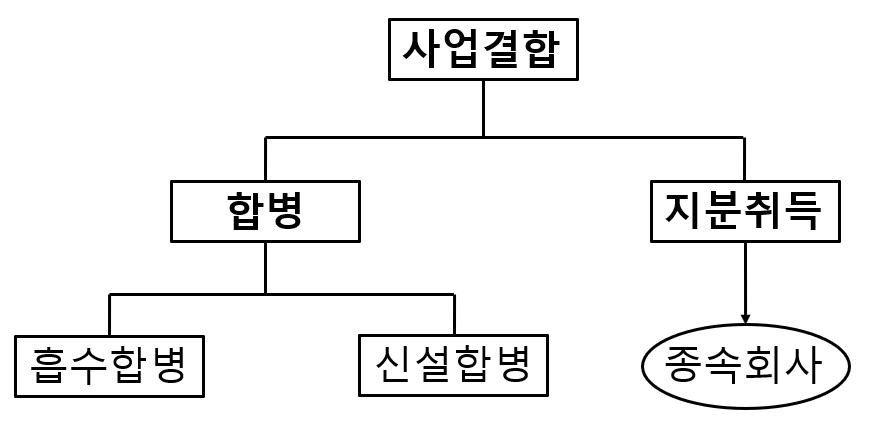

사업 다각화, 경쟁력 제고, 구조조정 및 성장 전략의 일환으로 많은 기업이 인수·합병(mergers and acquisitions, M&A)을 활용한다. 2019년 우리나라 기업의 인수·합병 규모는 37조원을 초과했다.1 전 세계적으로 보면 2019년 인수·합병 규모는 전년에 비해 감소하기는 했지만 3조 4천억달러에 달했다.2 한편, 직접 합병하지 않더라도 지분인수를 통해 의결권을 확보하여 다른 기업을 지배·통제할 수 있다.
이 장에서는 인수·합병과 관련된 재무회계 이슈로 사업결합과 그 이후의 연결회계를 살펴보자.
사업결합(business combination)은 다른 기업에 대한 지배력을 취득하여 경제적 단일체를 형성하는 것으로, 합병(mergers)과 지분취득(acquisition)의 형태가 있다. 이 둘의 차이점은 사업결합 이후 피취득기업(피인수회사)의 존속 여부이다. 합병의 경우에는 피취득기업이 소멸(법적실체를 상실)하나, 지분취득의 경우에는 존속(법적실체를 유지)한다. 합병은 추가적으로 인수합병과 신설합병으로 구분할 수 있다.3 두 경우 모두 피취득기업은 소멸한다. 인수합병의 경우에는 취득회사는 존속하나, 신설합병의 경우 합병참여기업 모두가 소멸하고 새로운 기업을 신설한다.

사업결합은 취득 자산과 인수 부채가 사업에 해당하는 경우를 대상으로 한다. 사업(business)은 “고객에게 재화나 용역을 제공하거나, 투자수익(예: 배당금 또는 이자)을 창출하거나 통상적인 활동에서 기타 수익 (other income)을 창출할 목적으로 수행되고 관리될 수 있는 활동과 자산의 통합된 집합”을 말한다. 따라서, 사업을 구성하지 않는 자산이나 자산 집단의 취득은 각각의 식별할 수 있는 취득 자산과 인수 부채를 식별하고 인식한다. 자산집단의 원가는 매수일의 상대적 공정가치에 기초하여 각각의 식별할 수 있는 자산과 부채에 배분한다. 사업결합이 아닌 경우에는 이후에 설명할 영업권이 발생하지 않는다.
사업(business)은 투입물(input) 그리고 그 투입물에 적용하여 산출물(output)의 창출에 기여할 수 있는 과정(process)으로 구성된다.
사업은 보통 산출물이 있지만 사업의 정의를 충족하기 위해 산출물이 요구되는 것은 아니다. 사업의 초기 단계에서는 산출물이 없을 수 있다. 따라서, 사업으로 보기위해서는 투입물과 그 투입물에 적용하는 과정이 필수 요소이다. 활동과 자산의 특정 집합이 사업인지 여부는 시장참여자가 그 통합된 집합을 사업으로 수행하고 운영할 수 있는지에 기초하여 결정한다. 그러므로 특정 집합이 사업인지의 여부를 파악할 때, 매도자가 그 집합을 사업으로 운영하였는지 또는 취득자가 그 집합을 사업으로 운영할 의도가 있는지는 관련성이 없다.
예시: 삼성전자 사업결합
삼성전자는 2019년 Corephonics사의 지분을 추가로 92.4% 인수하였고 (기존에 보유하고 있던 지분을 더하면 거의 100% 인수), 삼성전기㈜로부터 PLP 사업을 양수하였다. 사업결합관련 공시내용은 다음과 같다.
- 사업결합:
당기 중 발생한 주요한 사업결합 거래는 다음과 같습니다.
가. Corephotonics 지분 인수
연결회사의 종속기업 Samsung Electronics Benelux B.V.(SEBN)는 CIS 광학기술 및 우수 인력 확보를 위해 2019년 1월 28일자로 Corephotonics Ltd.의 지분 83.9%를, 2019년 3월 4일자로 8.5%를 인수하였습니다.
- 피인수회사의 개요
구 분 내 용 피인수회사명 Corephotonics Ltd. 본점소재지 Tel Aviv, Israel 대표이사 David Mendlovic 업종 카메라 솔루션 개발
- 인수회계처리
구 분 금액 (백만원) Ⅰ. 이전대가 사업결합 이전에 보유한 지분의 공정가치(*1) 13,236 추가 이전대가의 공정가치 160,214 총 이전대가 173,450 Ⅱ. 식별가능한 자산과 부채로 인식된 금액 현금및현금성자산 6,069 단기금융상품 등 19,354 매출채권 및 기타채권 1,199 유형자산 339 무형자산 100,598 기타자산 82 기타채무 236 이연법인세부채 23,138 기타부채 3,475 총 식별가능한 순자산 100,792 Ⅲ. 식별가능한 비지배지분으로 인식된 금액(*2) 77 Ⅳ. 영업권 (Ⅰ- Ⅱ + Ⅲ) 72,735 (*1) 사업결합 전에 연결회사의 종속기업인 SVIC 28호 신기술투자조합이 보유하고 있던 Corephotonics Ltd.의 지분 7.6%에 대하여 2019년 1월 28일 기준으로 공정가치를 재측정함으로써 기타비용 500백만원을 인식하였습니다. (*2) 사업결합 비지배지분은 피취득자의 순자산 중 비례적지분으로 측정되었습니다. Corephotonics가 2019년 1월 1일부터 연결대상에 편입되었다고 가정할 경우 편입될 매출 및 연결당기순손실은 1,421백만원 및 22,811백만원입니다. 또한 연결대상 편입 이후 Corephotonics로부터 발생한 매출 및 당기순손실은 1,102백만원 18,201백만원입니다.
나. PLP 사업 양수
연결회사는 2019년 4월 30일자 이사회 결의에 의거 2019년 6월 1일자로 차세대 패키지 기 술 확보를 통한 반도체 경쟁력을 강화하기 위하여 관계기업인 삼성전기 ㈜ 의 PLP 사업을 785,000백만원에 양수하였습니다.
구 분 금 액 (백만원) Ⅰ. 이전대가의 공정가치 785,000 Ⅱ. 식별가능한 자산과 부채로 인식된 금액 재고자산 10,906 유형자산 398,984 무형자산 182,171 기타자산 1,561 기타부채 15,363 총 식별가능한 순자산 578,259 Ⅲ. 영업권 (Ⅰ- Ⅱ) 206,741 PLP 사업이 2019년 1월 1일부터 사업양수되었다고 가정할 경우 편입될 매출은 없으며 연결 당기순손실은 179,316백만 원입니다. 또한 사업양수 이후 PLP사업으로부터 발생한 매출은 없으며 연결당기순손실은 109,504백만원입니다.
4.1 사업결합의 회계처리
사업결합은 취득법(acquisition method)을 적용하여 회계처리한다.4 법적인 관점에서 인수·합병은 서로 구별되지만, 경제적 실질의 관점에서 보면 피취득기업의 지배력을 획득한다는 측면에서 차이가 없다. 사업결합에서 취득법을 적용하기 위해서는 먼저 결합참여기업 중 한 기업을 취득자로 식별하여야 한다. 사업결합에서 취득자(acquirer)는 피취득자(acquiree)에 대한 지배력(control)을 획득하는 기업이다. 합병의 경우 합병회사가 취득자이고 피합병회사가 피취득자가 된다. 지분인수의 경우 취득자는 지배기업이 되고 피취득자는 종속기업이 된다.
취득자의 식별 예시:
주로 현금이나 그 밖의 자산을 이전하거나 부채를 부담하여 이루어지는 사업결합: 취득자는 보통 현금이나 그 밖의 자산을 이전한 기업 또는 부채를 부담하는 기업이다.
주로 지분을 교환하여 이루어지는 사업결합: 취득자는 보통 지분을 발행하는 기업이다. 그러나 보통 ’역취득’이라고 말하는 일부 사업결합에서는 지분을 발행하는 기업이 피취득자이다.5
취득자로 식별되는 결합참여기업은 보통 다른 기업들보다 규모(예: 자산, 수익, 이익으로 측정)가 유의적으로 큰 기업이다. 기업이 셋 이상 포함된 사업결합에서는 상대적 크기뿐 만 아니라 특히 어느 기업이 결합을 제안하였는지도 고려하여 취득자를 결정한다. 사업결합을 이루기 위하여 설립한 새로운 기업이 반드시 취득자는 아니다. 만약 사업결합을 이루기 위하여 새로운 기업을 지분을 발행하여 설립한 경우에 사업결합 전에 존재하였던 결합참여기업 중 한 기업을 취득자로 식별한다.
사업결합으로 취득자는 피취득자의 식별가능한 자산을 취득하고 부채를 인수한다. 취득한 자산과 인수한 부채는 “재무제표의 작성과 표시를 위한 개념체계”의 자산과 부채의 정의를 충족하여야 한다. 따라서, 사업결합후 구조조정의 실행에 따라 미래에 생길 것으로 예상하지만 현재 의무가 아닌 원가(예를 들어 피취득자의 영업활동 종료, 피취득자의 고용관계 종료, 피취득자의 종업원 재배치 등)은 부채로 인식할 수 없다. 한편, 취득자가 인식의 원칙과 조건을 적용하면 피취득자의 이전 재무제표에서 자산과 부채로 인식하지 않았던 자산과 부채를 일부 인식할 수 있다. 예를 들면 피취득자가 내부에서 개발하고 관련 원가를 비용으로 처리하여 자신의 재무제표에 자산으로 인식하지 않았던 브랜드명, 특허권, 고객 관계 등을 무형자산의 취득으로 인식한다. 사업결합에서 인식하는 식별할 수 있는 자산과 부채는 별도 거래의 결과가 아니라 사업결합 거래에서 취득자와 피취득자가 교환한 항목의 일부이어야 한다.
4.2 사업결합 인식과 측정
사업결합에서 취득자는 식별가능한 취득한 자산과 인수한 부채를 취득일의 공정가치로 측정한다.
많은 경우 사업결합으로 지불하는 이전대가(인수가격)이 피취득자(피인수기업)의 식별가능한 순자산의 공정가치보다 높은데 이는 영업권(goodwill)의 가치에 해당한다. 드문 경우지만 이전대가가 식별가능한 순자산의 공정가치보다 적으면 이는 취득자가 염가로 사업을 매수한 것으로 부의영업권 (negative goodwill)에 해당한다. 염가매수차익은 순자산의 인식 누락 등이 있을 경우 과대/부당 계상 될 수 있으므로 취득자는 모든 취득 자산과 인수 부채를 정확하게 식별하였는지 재검토하여야 한다.
예시: 호랑이기업은 승냥이기업을 인수하였다. 승냥이기업의 식별가능한 순자산의 공정가치는 13억원으로 평가되었다. 호랑이기업이 승냥이기업의 주주에게 지불한 가격이 15억원인 경우 자산으로 인식하는 영업권의 가치는 2억원(=15억원 - 13억원)이 된다. 만일, 승냥이기업이 사업을 급박하게 처분할 사정이 생겼고, 시장에서 매수자를 물색할 수 있는 시간이 부족하여 호랑이기업에게12억원이라는 저렴한 가격으로 사업을 매도한 경우 염가매수차익 또는 부의영업권 1억원을 당기손익으로 인식한다.
예시: 삼성전자는 2019년 PLP 사업양수에서 이전대가 7,850억원에서 식별가능한 순자산의 공정가치 5,783억원의 차이인 2,067억원을 영업권으로 인식하였다.
4.2.1 비지배지분
취득자는 피취득자의 지분을 모두 취득하지 않아도 지배력을 확보할 수 있다. 일반적으로 50%을 초과하는 의결권(지분)을 확보하면 지배력을 획득하고 피취득자는 종속회사가 된다. 종속회사가 된 피취득자의 자본(equity) 중 지배기업(parent)에 직접이나 간접으로 귀속되지 않는 지분을 비지배주주지분(non-controlling interests)이라고 한다. 피취득자에 대한 비지배지분은 다음 중 하나의 방법으로 측정한다.
공정가치 (fair value)
비례적가치 (the proportional value): 피취득자의 식별할 수 있는 순자산에 대해 인식한 금액 중 현재의 지분상품의 비례적 몫
피취득자의 재무제표에서 자본으로 분류되는 모든 비지배주주지분에 대해 위의 두가지 측정옵션이 허용되는 것은 아니다. (1) 현재의 소유지분(present ownership interest)이며 (2) 청산할 때 보유자에게 기업 순자산의 비례적 몫에 대하여 권리를 부여하고 있는 경우에만 해당한다. 스톡옵션과 같은 현재의 지분이 아니거나 청산 시 순자산에 대한 비례적 몫에 대한 권리가 없는 우선주는 공정가치로 측정하여야 한다. 이 경우에는 비례적 지분으로 측정할 수 없다. 한편, US GAAP에서는 비지배주주지분은 모두 공정가치로만 측정한다.
4.2.2 영업권
비지배주주지분과 단계적으로 지배력을 획득하는 경우 영업권은 다음과 같이 측정한다.
예시: 삼성전자는 2019년 Corephonics사의 지분을 추가로 인수하여 지배력을 획득하였다. 자산으로 인식한 영업권 72,735백만원은 (1) 이전대가 160,214백만원 (2) 비지배주주지분 77백만원 (3) 이전에 보유한 지분의 취득일 현재 공정가치 13,236백만원의 합에서 (4) 식별가능한 순자산의 공정가치 100,792백만원을 차감한 금액이다.
한편, 삼성전자의 경우 비지배주주지분을 피취득기업의 순자산의 공정가치의 비례적 몫으로 측정한다. 피취득기업 관련 비재배주주지분을 어떻게 측정하는 가에 따라 인식하는 영업권 또는 염가매수차익의 금액이 달라진다. 영업권의 경우 비지배주주지분을 높은 금액으로 측정할수록 더 크게 측정된다. 염가매수차익의 경우 비지배주주지분을 높은 금액으로 측정할수록 더 작게 측정된다 (나중에 나오는 IFRS 예시 참조).
사업결합에서 취득자가 피취득자의 자산을 취득하고 부채를 인수하면서 지급한 대가를 이전대가 (transferred consideration)라고 한다. 이전하는 대가의 형태는 다양하다. 합병에서 많이 활용하는 보통주 또는 우선주 같은 지분상품 뿐만 아니라 현금, 그 밖의 자산, 취득자의 사업 또는 종속기업, 조건부 대가, 옵션, 주식매입권, 상호실체의 조합원 지분을 대가로 이전할 수 있다. 사업결합에서 이전대가는 공정가치로 측정하며, 그 공정가치는 취득자가 이전하는 자산, 취득자가 피취득자의 이전 소유주에 대하여 부담하는 부채와 취득자가 발행한 지분의 취득일의 공정가치 합계로 산정한다.
이전대가 = 취득일의 공정가치 (발행한 지분 + 기타 이전한 자산 + 피취득자의 이전 소유자에 대해 부담하는 부채)
취득일에 공정가치와 장부금액이 다른 취득자의 자산과 부채(예: 취득자의 비화폐성자산 또는 사업)를 이전하는 경우, 취득자는 이전한 자산이나 부채를 취득일 현재 공정가치로 재측정하고, 그 결과 차손익이 있다면 당기손익으로 인식한다. 하지만, 이전한 자산이나 부채가 사업결합을 한 후에도 결합기업에 여전히 남아 있고 (예: 자산이나 부채가 피취득자의 이전 소유주가 아니라 피취득자에게 이전됨), 따라서 취득자가 그 자산이나 부채를 계속 통제하는 경우에는, 그 자산과 부채를 취득일 직전의 장부금액으로 측정하여 차손익을 인식하지 않는다. 이는 상업적실질(commercial susbstance)이 없는 거래의 회계처리와 동일하다.
이전대가에는 조건부 대가도 포함한다.
4.2.3 인식과 측정원칙의 예외
사업결합에서는 다음와 같은 일반적인 자산과 부채의 인식이나 측정원칙의 예외를 인정한다.
인식원칙의 예외
우발부채 (contingent liability): 사업결합에서는 과거사건에서 생긴 현재의무이고 그 공정가치를 신뢰성 있게 측정할 수 있는 우발부채를 부채로 인식한다. 일반적인 상황에서 우발부채는 충당부채와 달리 부채로 인식하지 않지만, 사업결합에서는 예외적으로 일부 우발부채를 부채로 인식한다.
사업결합 이후에는 정산, 취소, 소멸하기 전까지 최초에 인식한 금액 (’고객과의 계약에서 생기는 수익’의 원칙에 따라 누적 수익 금액을 차감)과 충당부채로 인식해야 하는 금액 중 큰 금액으로 측정한다. 따라서, 사업결합으로 인해 더 많은 부채를 인식하게 될 수 있다.
인식과 측정원칙 모두의 예외: 법인세, 종업원급여, 보상자산
측정원칙의 예외: 재취득한 권리, 주식기준보상, 매각예정자산
4.3 IFRS예시: 사업결합시 염가매수차익 (비지배주주지분 측정 옵션 포함) (IFRS 3. IE45 – 49)
AC사는 20X5년 1월 1일에 현금 150원을 대가로 비상장기업 TC 사의 지분 80%를 취득하였다. TC사의 이전 소유주는 특정일까지 자신의 투자자산을 처분할 필요가 있었기 때문에 다수의 잠재적 매수인에게 TC사를 사들일 의사를 알아볼 만한 충분한 시간이 없었다. AC사의 경영진은 취득일 현재 개별적으로 인식할 수 있고 식별할 수 있는 취득 자산과 인수 부채를 최초로 측정한다. 그러한 측정 결과 식별할 수 있는 자산은 250원이고 인수 부채는 50원이다. AC사가 고용한 독립적 자문인은 TC사에 대한 비지배지분 20%의 공정가치를 42원으로 산정하였다.
비지배지분을 공정가치로 측정하는 경우
TC사의 식별 할 수 있는 순자산의 금액(250원 - 50원 = 200원)은 이전대가의 공정가치와 TC사에 대한 비지배지분의 공정가치의 합계를 초과한다. 따라서 AC사는 취득 자산과 인수 부채를 식별하여 측정하기 위해 사용한 절차와 TC사에 대한 비지배지분과 이전 대가의 공정가치를 모두 측정하기 위해 사용한 절차를 검토한다. 그러한 검토를 한 후 AC사는 그 절차와 결과적인 측정치가 적절 하였다고 판단한다. AC사의 80% 지분매수에 따른 차익은 다음과 같다.
식별할 수 있는 취득 순자산금액(250 – 50) 200 차감: TC사에 대한 AC사의 80% 지분에 대하여 이전한 대가의 공정가치 150 가산: TC사에 대한 비지배지분의 공정가치 42 192 80% 지분의 염가매수에 따른 차익 8 AC사는 TC사의 취득을 연결재무제표에 다음과 같이 기록한다.
Dr. Cr. 식별할 수 있는 취득자산 250 현금 150 인수한 부채 50 염가매수차익 8 자본: TC에 대한 비지배지분 42 비지배지분을 식별가능한 순자산 공정가치의 비례적 지분으로 측정하는 경우
취득자가 피취득자의 식별할 수 있는 취득 순자산의 비례적 지분에 기초하여 TC사에 대한 비지배지분을 측정하기로 선택한다면, 비지배지분으로 인식될 금액은 40원(200원 x 0.20)이 될 것이다. 그러므로 염가매수차익은 10원[200원 – (150원 + 40원)]이 된다.
식별할 수 있는 취득 순자산금액(250 – 50) 200 차감: TC사에 대한 AC사의 80% 지분에 대하여 이전한 대가의 공정가치 150 가산: TC사에 대한 비지배지분의 공정가치 40 190 80% 지분의 염가매수에 따른 차익 10 AC사는 TC사의 취득을 연결재무제표에 다음과 같이 기록한다.
Dr. Cr. 식별할 수 있는 취득자산 250 현금 150 인수한 부채 50 염가매수차익 10 자본: TC에 대한 비지배지분 40
매일경제: https://www.mk.co.kr/news/stock/view/2019/12/1086990/↩︎
IMAA(The Institute for Mergers, Acquisitions and Alliances): https://imaa-institute.org/mergers-and-acquisitions-statistics/
한편, Mergermarket에 의하면 2019년 전세계 M&A 규모는 3.3조 달러에 달했다: https://www.mergermarket.com/info/2019-global-ma-report-financial-league-tables#:~:text=Mergermarket%2C%20the%20leading%20provider%20of,year%20at%20over%20USD%203tn↩︎
흡수합병을 merger로 한정하여 지칭하는 경우, 신설합병은 consolidation으로 지칭하기도 한다.↩︎
취득법을 적용하지 않는 경우는 (1) 동일 지배하에 있는 기업이나 사업 간의 결합 (2) ’연결재무제표’에서 정의하는 투자기업이 공정가치로 측정하여 당기손익에 반영해야 하는 종속기업의 경우가 있다.↩︎
역취득은 증권을 발행한 기업(법적 취득자)을 회계목적상 피취득자로 식별할 때 생긴다. 예를 들어, 비상장기업이 상장기업을 활용하여 우회상장하는 경우, 비상장기업은 상장기업이 자신의 지분과 교환하여 비상장기업의 지분을 취득하도록 상장기업과 약정을 한다. 이 경우 상장기업은 지분을 발행하기 때문에 법적 취득자이고, 비상장기업은 지분을 취득당하기 때문에 법적 피취득자이다. 하지만, 거래의 실질에 초점을 맞추는 회계적으로는 상장회사가 피취득자가 된다.↩︎